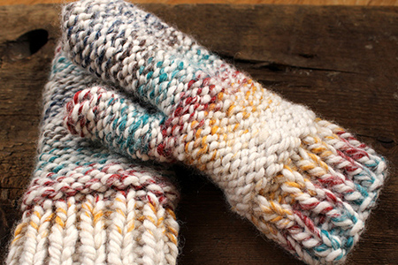
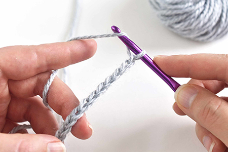
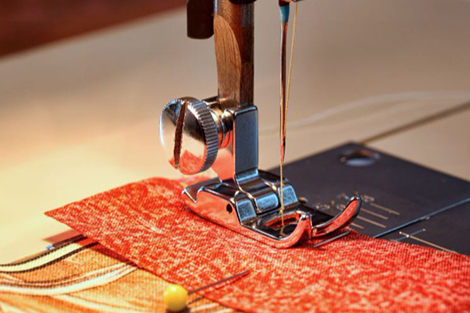
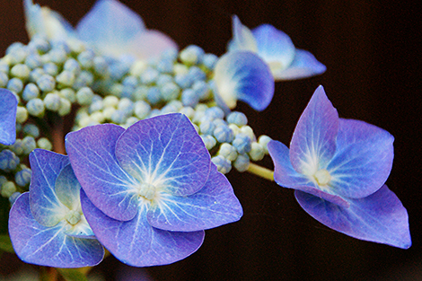

Knitting
We start the two stitches used in knitting: Knit and Purl. Then comes simple knitting patterns to apply the two stitches. Below are some beginner projects we will start with.
- Hats
- Scarves
- Mittens
Crocheting
We start with the types of stitches then move to patterns and other types of crocheting. Below are some the stitches to begin your learning process.
- Chain stitch
- Single crochet
- Double crochet
Sewing
We'll start with the simple patterns and move into more complex patterns and sewing types. Below are some the patterns to begin your learning process.
- Aprin
- Blouse
- Quilted table runner
Resin

We have a wide verity of molds to choose from. Choose your colors and mix with the resin then pour in to the molds and add embellishments. Below are some the items you can create.
- Costers
- Cutting boards
- Earings
Photography
To begin we will learn the different items on the camera. Then we'll work on different types of photos and lighting. Below are some the items you learn.
- Function of the camera
- Subject and lighting>
- Special effects
Candy

We will being this couse with learning how to temper chocolate and the use of compound chocolates. Then we will make candy with and without molds. Below are some the candies you can create.
- English toffee
- Marshmallows
- Truffles
Card Design

We will being this couse with an itroduction to the different tools and how to use them. Then we will move on to making different types of cards using die-cuts, embossing and other techniques. Below are some the techniques you will use to design cards.
- Die-cut press
- Embossing machine
- Stamping
Lathe

We will start with ways to be safe working with a lathe. Then we'll work on different types of tools and the cuts they make. Below are some the items you can create.
- Pens
- Candle Holders
- Bowls
Sign up for a class today! Call (425) 422-1111